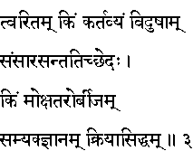
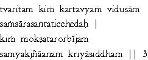

|

|
Verse 3 - Meaning:
Q: What (kim) is the immediate duty (kartavyam) and binding of a truly learned man ?
A:To try and succeed in terminating the ever-revolving cycle of births and deaths.(samsaara santati - is this vicious cycle)
Q: What is the seed (bijam) of the tree (taru) of liberation (moksha)?
A:The attainment of perfect and true knowledge (samyak-jn~anam) and its application in everyday life (kriyaa-siddham)
|